실록·국가유산 공식 자료로 확인되는 사실을 본문 골격으로 삼고, 후대에 형성된 이야기에는 ‘전한다’·‘전승’이라고 표시합니다.
왕이 갇힌 곳은 감옥이 아니었다
청령포에 들어서면 먼저 눈에 들어오는 것은 건물이 아니라 지형이다. 서강이 세 면을 휘감고, 서쪽에는 육육봉의 험한 산줄기가 막아선다. 나룻배 없이는 드나들기 어려운 이곳에 1457년 노산군이 된 단종이 유배되었다.
서울의 동망봉에는 영월로 떠난 단종을 바라보았다는 정순왕후의 이야기가 남아 있다. 청령포에는 단종이 한양을 그리워하며 돌을 쌓았다는 망향탑이 남아 있다. 두 이야기를 당대의 사실로 단정할 수는 없다. 그러나 후대 사람들이 헤어진 왕과 왕비를 서로 바라보는 존재로 기억했다는 점에서, 동망봉과 망향탑은 단종 서사의 두 끝을 이룬다.
1457년 영월 유배는 《세조실록》으로 확인한다. 청령포의 망향탑·관음송 등에 얽힌 이야기는 현지 안내와 후대 전승으로 구분해 서술한다. 현재 단종어소 역시 1457년 건물이 아니라 2000년 4월 복원된 재현 공간이다.
한양을 떠나 영월로 — 노산군의 유배
1457년 6월 22일 《세조실록》은 노산군을 영월로 보내며 화양정에서 전송하게 했다고 기록한다. 왕에서 상왕으로, 다시 노산군으로 낮아진 단종은 이제 궁궐을 떠나 영월로 향했다.
영월군의 청령포 안내는 그가 음력 6월 28일 청령포에 도착했다고 설명한다. 이 답사에서 중요한 것은 그가 머문 집 한 채보다, 그 집을 둘러싼 강과 산이 어떤 공간을 만들었는지 먼저 보는 일이다.
청령포 — 물과 절벽이 만든 유배지
청령포는 동·남·북 세 면을 서강이 감싸고 서쪽은 육육봉의 험준한 산줄기가 막는다. 아름다운 강변이지만, 1457년의 단종에게 이 풍경은 경계였다. 나룻배를 이용하지 않고는 밖으로 나가기 어려운 지형 자체가 유배의 조건이었다.
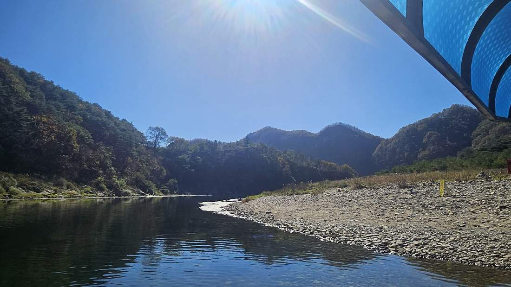
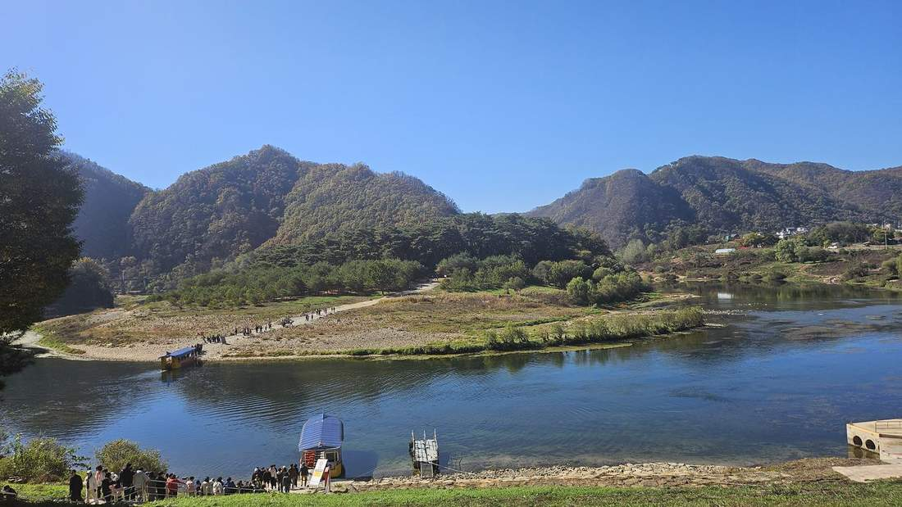
그래서 청령포 답사의 첫 질문은 “단종이 어느 방에서 지냈는가”보다 “왜 이곳에서 빠져나가기 어려웠는가”가 되어야 한다. 지형을 보고 난 뒤에야 단종어소의 의미도 달라진다.
단종어소 — 1457년의 자리와 2000년의 재현
현재 청령포의 단종어소는 단종이 실제 살았던 1457년의 건물이 아니다. 영월군 공식 안내에 따르면 현재의 단종어소와 행랑채는 2000년 4월 복원되었다. 1457년 여름 큰 홍수로 서강이 범람한 뒤 당시의 거처는 흔적을 찾기 어려워졌다고 설명한다.
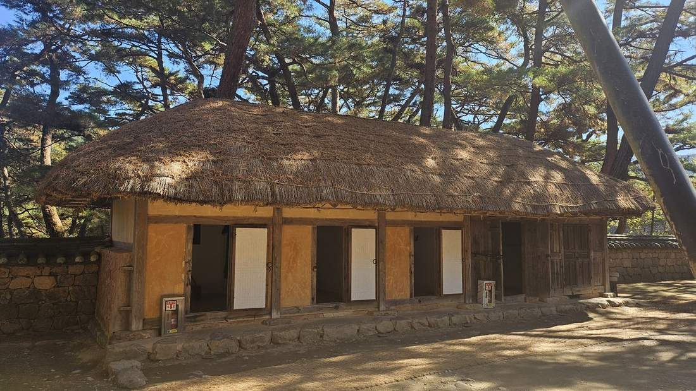
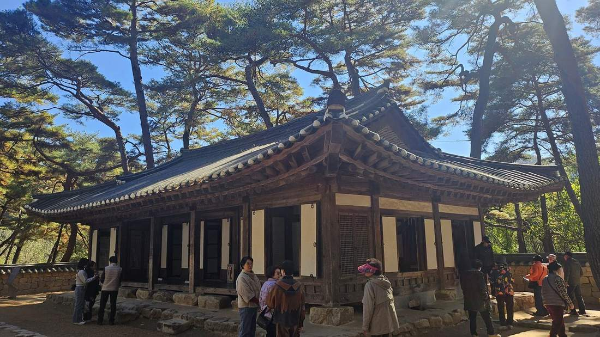
그렇다면 현재 어소를 보는 의미는 무엇일까. 건물 자체를 단종 당대의 유물로 보는 것이 아니라, 단종이 이곳에 머물렀다는 기억을 오늘의 공간으로 재구성한 장소로 보는 편이 정확하다. 내부의 방과 생활 모습 역시 당시 생활을 이해하기 위한 재현이다.
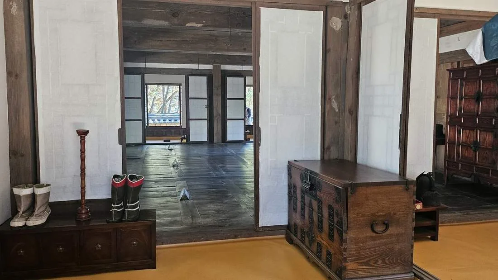
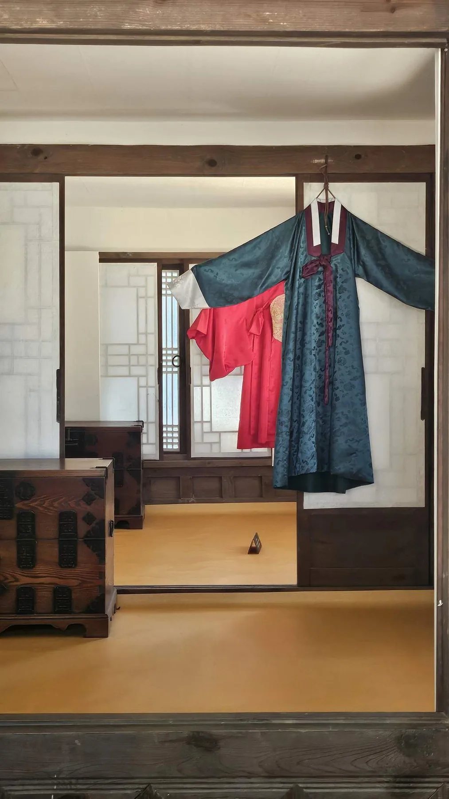
영조 39년(1763)에는 영조의 어필로 ‘단묘재본부시유지(端廟在本府時遺址)’라 새긴 비가 세워졌다. 현재 건물보다 이 표석이 “단종이 이곳에 머물렀던 옛 터”라는 기억을 18세기 국가가 공식화했다는 점에서 중요하다.
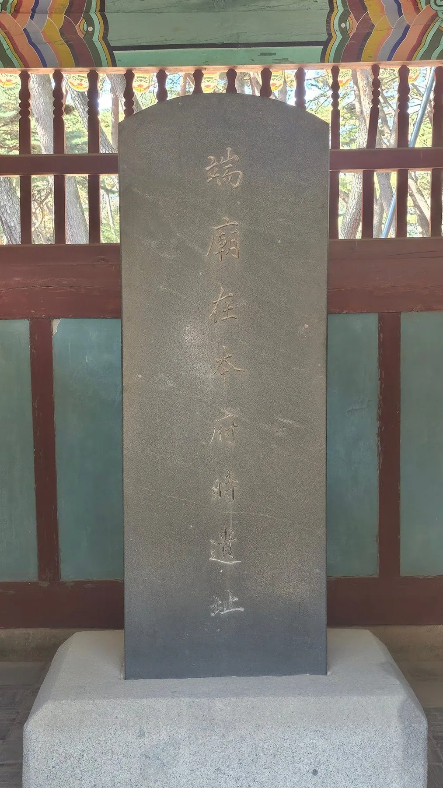
금표비와 관음송 — 청령포가 기억의 장소가 되다
단종이 복위된 뒤 청령포는 단순한 유배지가 아니라 왕의 유적지로 다시 읽히기 시작했다. 1726년 영월부사 윤양래가 어명에 따라 금표비를 세웠고, 1763년에는 단종이 머물렀던 옛 터를 알리는 단묘재본부시유지비가 세워졌다.
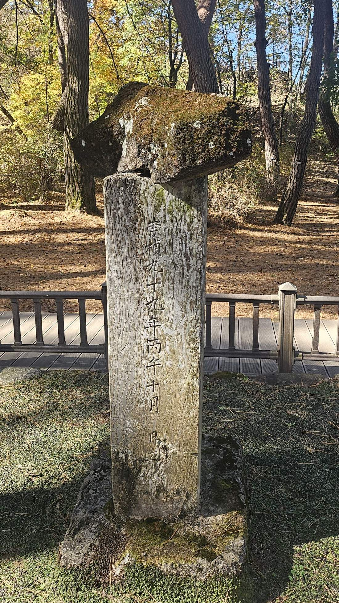
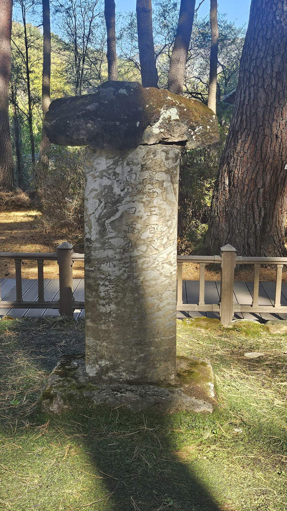
관음송은 천연기념물 제349호다. 한 뿌리에서 두 줄기로 갈라져 오르고, 한쪽 줄기는 쇠 지지대가 받치고 있다. 단종이 이 소나무 가지 사이에 앉아 쉬었다거나, 단종의 통곡을 들었다는 데서 이름이 붙었다는 이야기가 전한다. 이것은 《세조실록》이 전하는 사실이 아니라 후대의 전승이다. 그러나 바로 그 전승 때문에 관음송은 청령포에서 단종의 외로움을 기억하는 상징이 되었다.
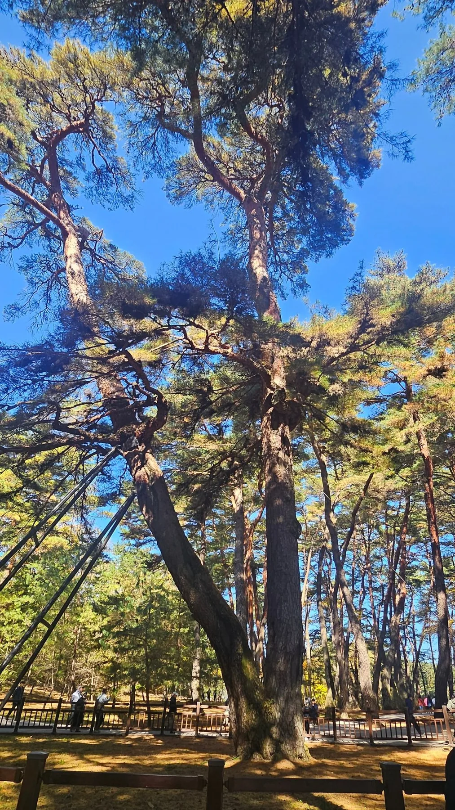
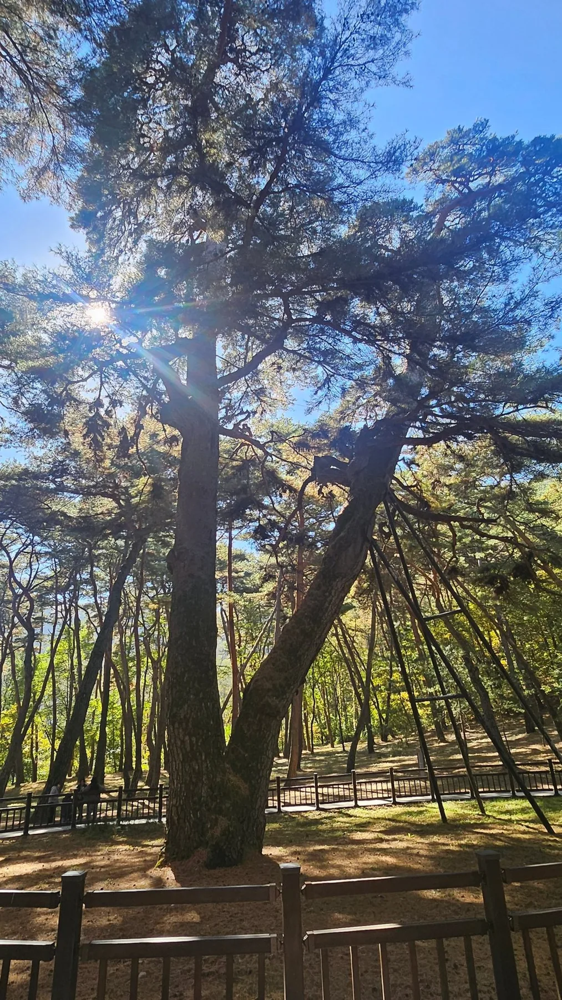
망향탑 — 영월에서 한양을 바라보다
청령포에서 이번 답사의 감정적 중심은 망향탑이다. 현장 안내판은 단종이 청령포에 머물 때 한양을 그리워하며 돌을 쌓아 만들었다고 전한다. 이 이야기를 당대 사료로 확인되는 사실처럼 말할 수는 없다. 망향탑은 “단종이 한양을 그리워했다”는 후대의 기억이 돌무더기라는 형태로 남은 장소로 보는 것이 안전하다.
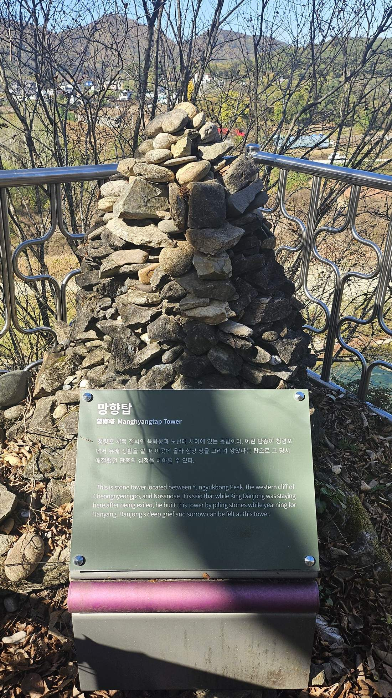
이곳에서 서울의 동망봉이 다시 떠오른다. 정업원터·동망봉 편에서는 정순왕후가 영월 쪽을 바라보았다는 이야기를 만났다. 청령포에서는 반대로 단종이 한양을 그리워했다는 이야기를 만난다. 두 장소가 실제로 서로를 바라보던 역사적 장치였다는 뜻은 아니다. 하지만 후대의 기억 속에서 두 사람은 서울과 영월, 서로 다른 끝에서 상대를 바라보는 존재가 되었다.
서울에는 영월을 바라본 왕비의 이야기가, 영월에는 한양을 그리워한 왕의 이야기가 남았다. 이 대칭은 사실의 단정이 아니라 전승이 만들어낸 기억의 구조다. ④에서 헤어진 두 사람의 이야기가 ⑥ 청령포에서 다시 만난다.
청령포를 떠나다 — 홍수 뒤 관풍헌으로
영월군 안내는 1457년 여름 큰 홍수로 서강이 범람하면서 청령포 일대가 침수되었고, 단종의 거처도 더 이상 남지 않게 되었다고 설명한다. 단종은 이후 영월 관아의 객사인 관풍헌으로 거처를 옮긴 것으로 전한다.
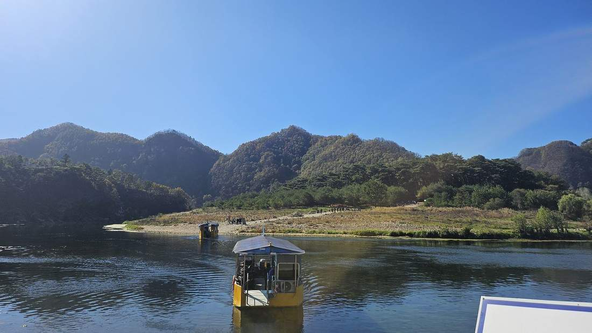
청령포에서 관풍헌으로 이동하면 답사의 분위기도 달라진다. 청령포가 “갇힌 공간”을 보여준다면, 관풍헌은 단종의 마지막 시간을 기억하는 공간이다. 그러나 ⑥편의 중심은 끝까지 청령포에 둔다.
관풍헌·자규루 — 마지막 시간
관풍헌은 영월 객사의 동헌으로, 청령포에서 옮겨온 단종의 마지막 거처로 전해진다. 자규루 역시 단종의 슬픔을 상징하는 장소로 기억되어 왔다. 여기서는 청령포에서 시작된 유배가 어디에서 끝났는지를 확인하는 정도로 따라간다.
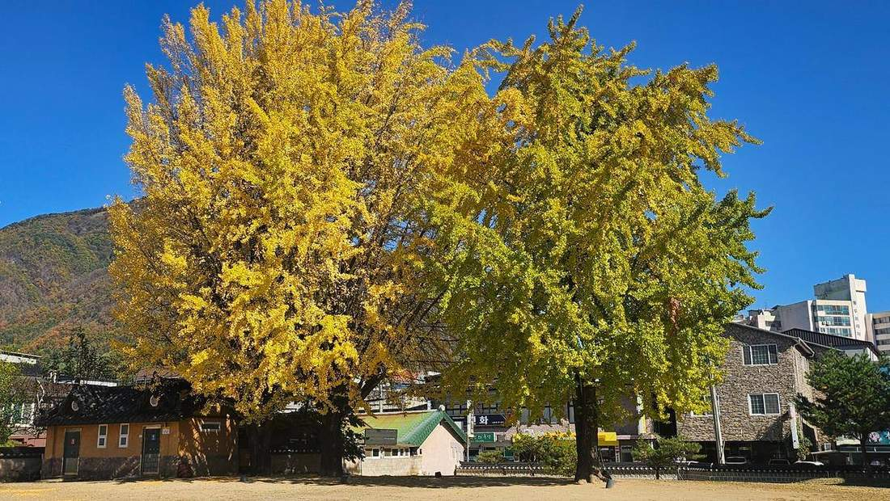
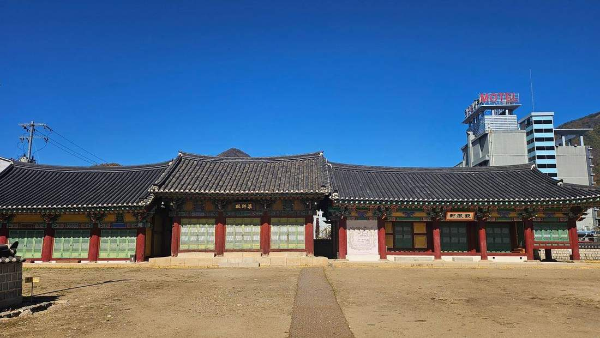
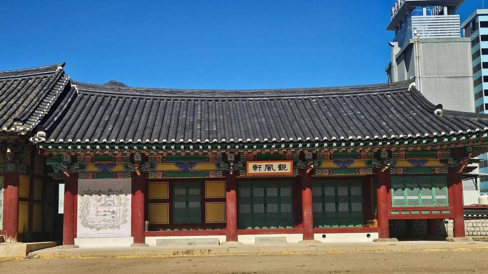
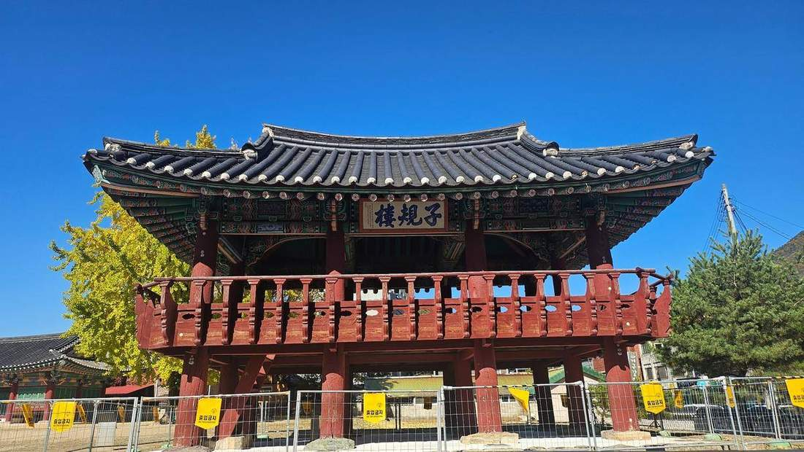
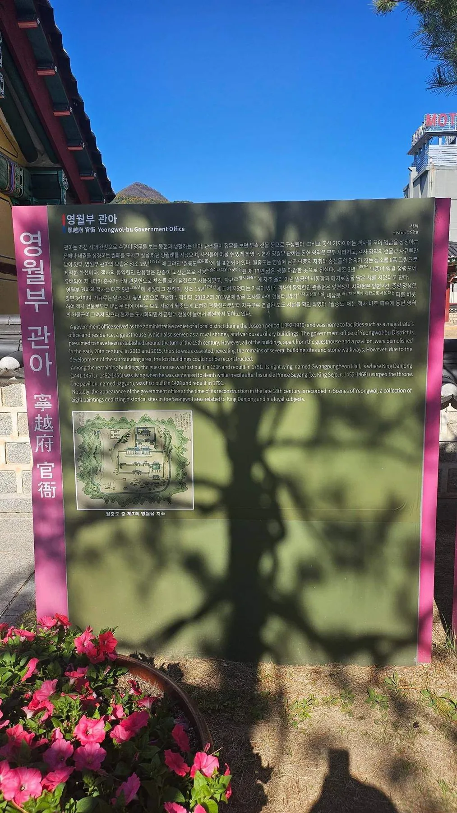
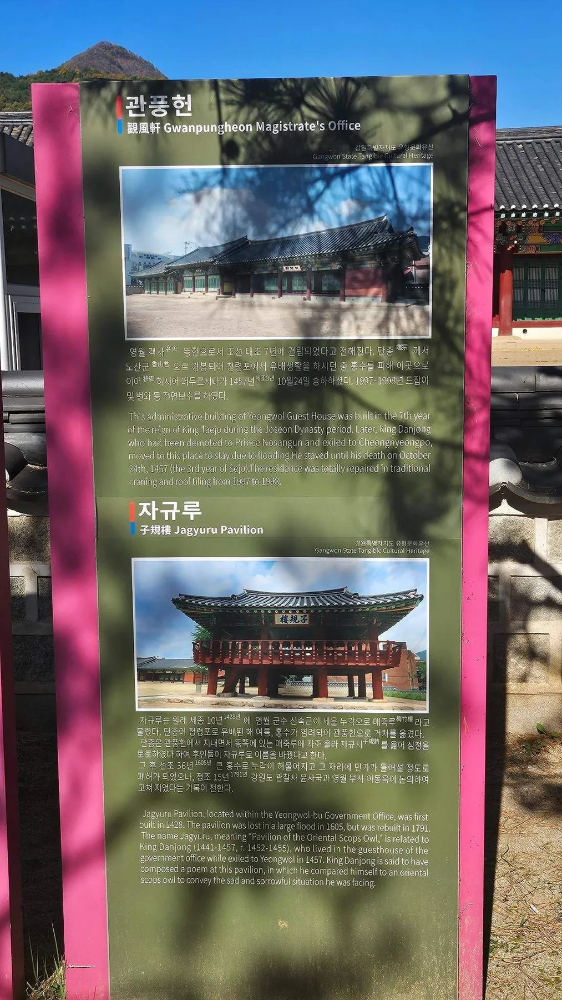
1457년 10월 21일 《세조실록》은 노산군의 죽음을 “魯山聞之, 亦自縊而卒, 以禮葬之”라고 기록한다. 공식 기록은 노산군이 스스로 목을 매어 죽었다고 적지만, 후대에는 사약·교살 등 다른 전승도 강하게 남았다. 이 답사기에서는 후대 전승 가운데 하나를 확정된 역사적 사실로 선택하지 않는다.
관풍헌에서 생은 끝났지만 이야기는 끝나지 않았다. 다음 답사지 장릉에서는 초라한 무덤이 어떻게 왕릉이 되었고, 노산군이 어떻게 다시 단종으로 돌아왔는지를 따라간다.
강에 갇힌 왕에서, 무덤에 남은 왕으로
청령포에서 본 것은 단종의 집 한 채가 아니었다. 강과 절벽이 만든 고립, 후대가 복원한 어소, 왕의 흔적을 지키려 세운 비석, 그리고 한양을 그리워했다는 망향탑까지 — 청령포는 1457년의 유배와 그 뒤 수백 년의 기억이 겹쳐 있는 장소였다.
관풍헌에서 노산군의 생은 끝났다. 이제 다음 답사지는 장릉이다. 죽은 왕의 무덤은 처음부터 왕릉이 아니었다.
조선 왕조 이야기 · 단종 편 — 답사의 길
- ①·② 경복궁 — 왕좌는 있었지만
- ③ 사육신묘 — 왕을 되찾으려 한 사람들
- ④ 정업원터·동망봉 — 혼자 남은 왕비
- ⑤ 사릉 — 왕비의 마지막 자리
- ⑥ 청령포·관풍헌·자규루 — 유배와 마지막 시간
- ⑦ 장릉 — 무덤에서 왕릉으로
- ⑧ 종묘 영녕전 — 왕의 귀환
사료와 근거
① 《세조실록》 세조 3년 6월 22일 — 노산군의 영월 출발과 화양정 전송.
② 《세조실록》 세조 3년 10월 9~21일 — 노산군 처벌을 둘러싼 반복된 청과 세조의 대응, 10월 21일 노산군의 죽음 기록.
③ 《세조실록》 세조 3년 10월 22일 — 노산군을 알현하려 한 종 독동·윤생 등에 대한 장 100대 처벌.
④ 《중종실록》 중종 11년 12월 10일 — 영월 사람들이 전한 ‘고을 아전 엄흥도’의 장사 이야기와 당시 노산군 묘의 상태.
⑤ 국가유산 공식 설명 및 영월군 문화관광 자료 — 청령포의 지형과 유배지 성격, 1726년 금표비·1763년 단묘유지비·2000년 어소 재현.
⑥ 국가유산 공식 설명 「영월 자규루 및 관풍헌」 — 현존 공간의 성격과 문화유산 지정.
※ 단종의 사망 방식은 당대 공식 기록과 후대 기록·전승이 일치하지 않으므로 본문에서 단정하지 않았다.